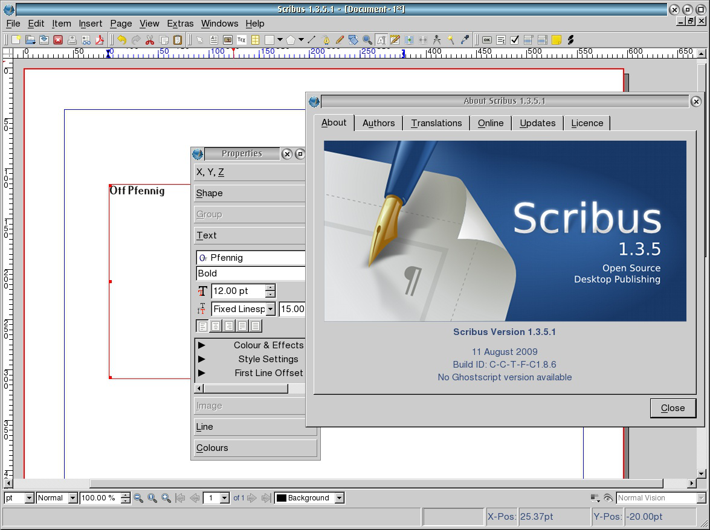

The Scribus Team is much obliged to Paul Smedley for taking pains over porting Scribus to the OS/2 and eComStation platforms.
The Scribus Team also wants to thank Serenity Systems and Mensys BV for supporting development and testing of the OS/2 and eComStation port.
|  |
To use Scribus on OS/2 and eCS, the following requirements have to be met:
C:\OS2\DLL (OS/2) or C:\ECS\DLL (eComStation).The Scribus version for OS/2 and eCS is not being shipped with an installer. All you need to do is download the ZIP file from Sourceforge (the OS/2 and eCS version is the ZIP file with “OS2” in the file name) and unzip the archive to wherever you want. Then enter the extracted SCRIBUS-1.4.x-OS2-date\scribus directory, where “x” is a placeholder for the respective Scribus version number, and “date” stands for the creation date of your Scribus version, e.g. 20110128 (=28 January 2011) and double-click the scribus.exe file. You can also start Scribus from the command prompt.
Note that you have to extract the content of the ZIP file to a partition that uses a file system which supports long file names. FAT16 does not support long file names, while the existing FAT32 or even NTFS file system drivers for OS/2 and eCS are experimental at best, so the safest bet is to use a native IBM file system like HPFS (the OS/2 and eCS default FS) or JFS.
Like Scribus, Ghostscript doesn’t come with an installer. Simply download and extract the ZIP file from the link mentioned above. To configure Scribus for the use of Ghostscript, open the File > Preferences dialog in Scribus, then go to the “External Tools” tab. Under “PostScript Interpreter” you can either enter the path to the Ghostscript executable file manually or use the file dialog by clicking on “Change ...”. The name of the executable is gsos2.exe, and it’s located in the subdirectory \bin, so the path to the file may look like this: X:\GHOSTSCRIPT-900-OS2-date\GS900OS2\bin\gsos2.exe.
General feedback can be provided to paul@smedley.info and via the normal Scribus communications methods (IRC, mailing list etc). Bug reports should go to http://bugs.scribus.net.
If you like this software and want to support continued OS/2 and eCS ports, please consider donating via PayPal via the link at http://smedley.info/os2ports, or via the Mensys online store at http://www.mensys.net/os2ports.
You can also sponsor/support the Qt4 for OS/2 project – without the Netlabs Qt4 project, this port could not exist!